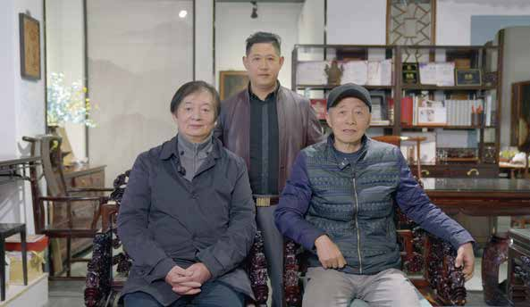
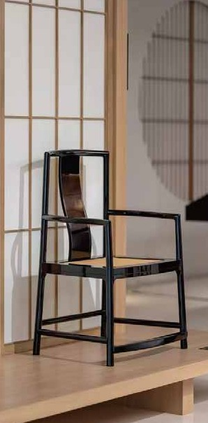

创始人简介
张守进
苏州前进小叶紫檀公司董事长、总经理
安徽省工艺美术大师
安徽省工艺美术名人
江苏轻工工匠
江苏省技术能手
苏州市劳动模范
苏州市民间工艺家
苏州市家具协会理事
中国古典家具协会理事
中国红木美学研究会副会长
中国紫檀文化研究会研究员
中华木作艺术品鉴定评估师
中国紫檀文化学术研究标兵
明式家具制作技艺正脉传承人
中华文化促进会木作文化工作委员会会员
作品曾获安徽省第十二届工艺美术精品博览会"徽工奖"金奖
作品曾连续多年获"姑苏杯"、"苏艺杯"、"艺博杯"、"红顶杯"、"大工匠杯"等多项大赛的金奖、银奖、优秀作品奖、最佳创意奖、优秀制作奖等20多个奖项
曾担任2023中华木作雕刻与木工竞技大会行业评委
学术论文曾被"苏州工艺美术网站"收录
其创始企业"前进小叶紫檀"获"苏州市消费者满意单位"、"中国苏作家具品牌企业"等多项荣誉
2024年入选《苏州手工艺当代人物志（竹木核雕）》
匠心师传
传承匠心，延续经典
匠海流年
匠人历程，传承不息
匠耀四方
荣誉见证，匠心永恒
徽工奖金奖
安徽省第十二届工艺美术精品博览会
姑苏杯金奖
苏州工艺美术精品大赛
苏艺杯优秀作品奖
江苏省工艺美术大赛
艺博杯银奖
中国工艺美术博览会
红顶杯最佳创意奖
中国传统工艺创新大赛
大工匠杯优秀制作奖
中国家具制作工艺大赛

安徽省工艺美术大师
荣誉证书 - 2023年
江苏省技术能手
荣誉证书 - 2018年
苏州市劳动模范
荣誉证书
中国紫檀文化研究贡献人物
荣誉证书
典范雅作
匠心之作，经典传承
